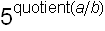
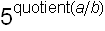
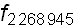

Fractran.
EvolveList, the basic instruction :
The example of a parity checker : EvolveList applied to 63 generates a list ending with 5 if n is odd and with 1 otherwise :

6 simple algorithms :
1) Addition in Fractran : 
 .
.
2) Multiplication in Fractran : .
3) Integer division in Fractran :  .
.
4) Greatest common divisor : 
 .
.
5) Least of two integers : 
 .
.
6) Swapping two registers :


Programming a function.
Fibonacci[n] : →
Factorial[n] :  →
→
Universal arithmetical program. : k → (if defined).
Universality implies the undecidability of the halting problem. An arbitrary limit (say 10000 steps) prevents eventual looping :
Computable functions are indexed by the positive integer, k. Most low k-values correspond to uninteresting functions : [n]=n+1 or [3]=4 (undefined if n≠3).
Dropper algorithms.
Here Fractran enumerates the asked integers, n, one by one (Only powers of 2 are significant in the output).
Collatz sequence of an integer (Halting conjectured) :

Primes generator (No halting of course) :
A bug.
Decimals of π : This program does not work because of a well-known but never corrected bug (probably in the coding of the inputs and/or of the outputs)